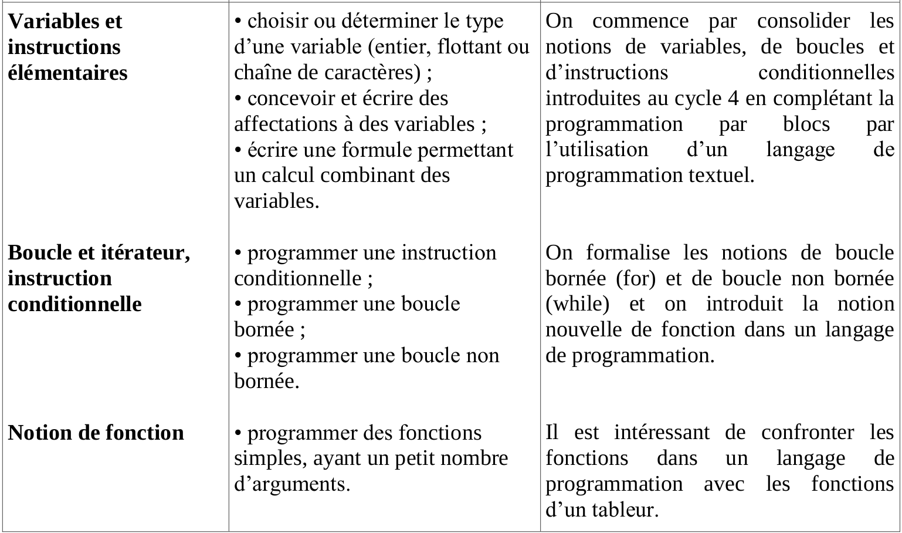

<!DOCTYPE html>
<html>
    <head>
        <meta charset="utf-8">
        <meta name="apple-mobile-web-app-capable" content="yes" />
        <meta name="apple-mobile-web-app-status-bar-style" content="black-translucent" />
        <meta name="viewport" content="width=device-width, initial-scale=1.0, maximum-scale=1.0, user-scalable=no">

        <title>Transition collège-lycée</title>
        <link rel="stylesheet" href="reveal/css/reveal.min.css">
        <link rel="stylesheet" href="reveal/css/theme/microalg.css" id="theme">

        <!-- If the query includes 'print-pdf', use the PDF print sheet -->
        <script>
            document.write( '<link rel="stylesheet" href="reveal/css/print/' + ( window.location.search.match( /print-pdf/gi ) ? 'pdf' : 'paper' ) + '.css" type="text/css" media="print">' );
        </script>

        <!--[if lt IE 9]>
        <script src="reveal/lib/js/html5shiv.js"></script>
        <![endif]-->

        <script type="text/javascript" src="http://ajax.googleapis.com/ajax/libs/jquery/1.8.2/jquery.min.js"></script>
        <script>window.jQuery || document.write('<script src="jquery.min.js"><\/script>')</script>
        <link rel="icon" href="img/logo_microalg.ico" />

        <script type="text/x-mathjax-config">
        MathJax.Hub.Config({
            extensions: ["tex2jax.js","fp.js"],
            MathMenu: {
                showLocale: false,
            },
            jax: ["input/TeX","output/HTML-CSS"],
            tex2jax: {
                inlineMath: [['$','$']],
                displayMath: [['$$','$$']],
                }
            });
        </script>
        <script type="text/javascript" src="mathjax/MathJax.js?locale=fr"></script>
    </head>

    <body>
        <div class="reveal">
            <div class="slides">
                <section data-markdown data-separator="^\n----*\n" data-vertical="^\n\n" data-charset="utf-8">

                    <script type="text/template">
&nbsp;

# Transition collège-lycée,

# Des blocs au texte ?

&nbsp;

&nbsp;

<div style="text-align: right; font-size: 75%;">C.Gragnic 28 juin 2017</div>
<div style="text-align: right;">École d’été du Collège Informatique</div>

---

# Présentations et objectifs

* christophe.gragnic@ac-nantes.fr
* enseigne au lycée
  * les maths
  * l’informatique
* et vous…
  * qui ?
  * pourquoi ?

---

# Propositions

1. bilan des programmes du cycle 4 et de seconde
1. quelques outils pour passer des blocs au texte
1. quelques méthodes pour passer des blocs au texte
1. présentation du Club des Expressions et de MicroAlg
1. débat sur la transition collège-lycée

---

# Cycle 4

[Math-Techno 2016 Cycle 4, partie algorithmique (pdf)](http://www.pedagogie.ac-nantes.fr/medias/fichier/programmes-math-techno-2016-cycle4_1449591171485-pdf?INLINE=FALSE)

([archive](docs/programmes-math-techno-2016-cycle4.pdf))


# Cycle 4

* Contributions au socle commun
  * Domaine 1 : Les langages pour penser et communiquer
  * Domaine 2 : Les méthodes et outils pour apprendre
  * Domaine 3 : La formation de la personne et du citoyen
  * Domaine 4 : Les systèmes naturels et les systèmes techniques
  * Domaine 5 : Les représentations du monde et l’activité humaine


# Cycle 4

* p.13/29, le programme de mathématiques
  * liste les attendus de fin de cycle
  * ancré dans les cinq domaines
  * quatre thèmes :
    * nombres et calculs
    * organisation et gestion de données, fonctions
    * grandeurs et mesures
    * espace et géométrie


# Cycle 4

* « En outre, un enseignement de l’informatique est dispensé conjointement en mathématiques et en technologie. »
* Six compétences majeures de l’activité mathématique
  * chercher
  * modéliser
  * représenter
  * raisonner
  * calculer
  * communiquer
* « …résolution de problèmes… »
* « …formation au raisonnement et l’initiation à la démonstration… »
* « …l’enseignement de l’informatique… pédagogie de projet… »


# Cycle 4

* p.25/29, Algorithmique et programmation
* « Au cycle 4, les élèves s’initient à la programmation, en développant dans une démarche de projet quelques programmes simples, sans viser une connaissance experte et exhaustive d’un langage ou d’un logiciel particulier. »
* « Écrire, mettre au point et exécuter un programme simple »


# Cycle 4

* Décomposer un problème en sous-problèmes afin de structurer un programme ;
  reconnaître des schémas.
* Écrire, mettre au point (tester, corriger) et exécuter un programme
  en réponse à un problème donné.
* Écrire un programme dans lequel des actions sont déclenchées
  par des événements extérieurs.
* Programmer des scripts se déroulant en parallèle.
* Notions d’algorithme et de programme.
* Notion de variable informatique.
* Déclenchement d’une action par un évènement, séquences d’instructions,
  boucles, instructions conditionnelles.


# Cycle 4

Repères de progressivité :

* En 5ème, les élèves s’initient à la programmation événementielle.
* Progressivement, ils développent de nouvelles compétences,
  * en programmant des actions en parallèle,
  * en utilisant la notion de variable informatique,
  * en découvrant les boucles et les instructions conditionnelles
    qui complètent les structures de contrôle liées aux événements.


# Cycle 4

Extrait technologie :

* « compilent \[le programme\] et l’exécutent… »
* « …langage de programmation couplé à une interface graphique… »
* « …représentation graphique simplifiée des éléments constitutifs de
  la programmation… »


# Cycle 4

Extrait technologie (suite) :

* Comprendre le fonctionnement d’un réseau informatique
* Écrire, mettre au point et exécuter un programme
  * Analyser le comportement attendu d’un système
    réel et décomposer le problème posé en sous-
    problèmes afin de structurer un programme de
    commande.
  * Écrire, mettre au point (tester, corriger) et
    exécuter un programme commandant un
    système réel et vérifier le comportement attendu.
  * Écrire un programme dans lequel des actions
    sont déclenchées par des événements extérieurs.


# Cycle 4

* Écrire, mettre au point et exécuter un programme (suite)
  * Notions d’algorithme et de programme.
  * Notion de variable informatique.
  * Déclenchement d’une action par un
    évènement, séquences d’instructions, boucles,
    instructions conditionnelles.
  * Systèmes embarqués.
  * Forme et transmission du signal.
  * Capteur, actionneur, interface.


# Cycle 4

Repères de progressivité

* En 5ème : traitement, mise au point et exécution de programme simple avec un nombre limité de variables d’entrée et de sortie, développement de programmes avec des boucles itératives.
* En 4ème : traitement, mise au point et exécution de programme avec introduction de plusieurs variables d’entrée et de sortie
* En 3ème : introduction du comptage et de plusieurs boucles conditionnels imbriqués, décomposition en plusieurs sous-problèmes

---

# Seconde

[Aménagement du programme de maths](http://www.pedagogie.ac-nantes.fr/medias/fichier/ensel512-maths-757953_1493927732817-pdf?INLINE=FALSE)

([archive](docs/ensel512-maths-757953.pdf))


# Seconde

Objectif général

« …former les élèves à la démarche scientifique
sous toutes ses formes pour les rendre capables de :

* **chercher**, **expérimenter** – en particulier à l’aide d’outils logiciels
* **modéliser**, faire une simulation, valider ou invalider un modèle
* **représenter**, choisir un cadre, changer de registre
* **raisonner**, **démontrer**, trouver des résultats partiels et les mettre en perspective
* **calculer**, appliquer des techniques et mettre en œuvre des algorithmes
* **communiquer** un résultat par oral ou par écrit, expliquer oralement une démarche.


# Seconde

Organisation du programme

* Fonctions
* Géométrie
* Statistiques et probabilités
* **Algorithmique et programmation**
  * …doit être réinvesti dans les trois autres parties
  * activités de type algorithmique signalées par ◊


# Seconde

Fonctions

* tracé de courbe


# Seconde

Géométrie

* géométrie repérée et traduction numérique de propriétés géométriques
  pour de résoudre certains problèmes par la mise en œuvre d’algorithmes
  simples


# Seconde

Statistiques et probabilités

* utilisation d’instructions conditionnelles dans une simulation
* écriture d’algorithmes (marches aléatoires) pour illustrer
  la répétition d’expériences aléatoires


# Seconde

Algorithmique et programmation

* composante essentielle de l’activité mathématique
* consolidation des acquis du cycle 4 autour de deux idées essentielles :
  * la **notion de fonction** d’une part, et
  * la **programmation** comme production d’un texte
    dans un langage informatique d’autre part.


# Seconde

Dans le cadre de cette activité, les élèves sont entraînés :

* à décrire des algorithmes en langage naturel ou
  dans un langage de programmation
* à en réaliser quelques-uns à l’aide d’un programme simple
  écrit dans un langage de programmation textuel
*  à interpréter des algorithmes plus complexes.


# Seconde

* « En programmant, les élèves revisitent les notions de variables
  et de fonctions sous une forme différente…
* Il convient d'y être attentif. »


# Seconde




# Seconde

Entrevue avec Mme Bluteau-Davy

* double objectif :
  * algorithmique
  * programmation avec Python

---

# Outils

* [From blocks to code with Trinket](https://hourofpython.trinket.io/from-blocks-to-code-with-trinket)
* [Démo de Blockly](https://blockly-demo.appspot.com/static/demos/code/index.html)
* Le [Club des Expressions](http://expressions.club) et
  [MicroAlg](http://microalg.info)

---

# Méthodes

* Sur la suite de Syracuse
* Réexpliquer par un texte
* Réexpliquer à un programmeur
* Avec un jeu d’instructions, programmer
  * Puzzle
  * Texte
    * Commentaires
    * Code

</script>
                </section>
            </div>
        </div>

        <script src="reveal/lib/js/head.min.js"></script>
        <script src="reveal/js/reveal.min.js"></script>

        <script>
            // Full list of configuration options available here:
            // https://github.com/hakimel/reveal.js#configuration
            Reveal.initialize({
                controls: true,
                help: true,
                progress: true,
                slideNumber: true,
                history: true,
                center: false,

                theme: Reveal.getQueryHash().theme, // available themes are in /css/theme
                transition: Reveal.getQueryHash().transition || 'none', // default/cube/page/concave/zoom/linear/fade/none

                // Optional libraries used to extend on reveal.js
                dependencies: [
                    { src: 'reveal/lib/js/classList.js', condition: function() { return !document.body.classList; } },
                    { src: 'reveal/plugin/markdown/marked.js', condition: function() { return !!document.querySelector( '[data-markdown]' ); } },
                    { src: 'reveal/plugin/markdown/markdown.js',
                        condition: function() { return !!document.querySelector( '[data-markdown]' ); },
                        // All list items are fragments, thanks to
                        // http://stackoverflow.com/questions/13705848/fragments-in-reveal-js-using-markdown?rq=1#15354240
                        callback: function() {
                            Array.prototype.forEach.call(document.querySelectorAll('ul > li, ol > li'),
                            function(ele){ if (ele.className != 'nofragment') ele.className = 'fragment';});
                        } },
                    { src: 'reveal/plugin/zoom-js/zoom.js', async: true, condition: function() { return !!document.body.classList; } },
                    { src: 'reveal/plugin/notes/notes.js', async: true, condition: function() { return !!document.body.classList; } },
                    { src: 'plugin/math/math.js', async: true }
                ],
                math: {
                        mathjax: 'mathjax/MathJax.js',
                        config: 'TeX-AMS_HTML-full'},
                minScale: 1,
                maxScale: 1
            });
        </script>
    </body>
</html>
